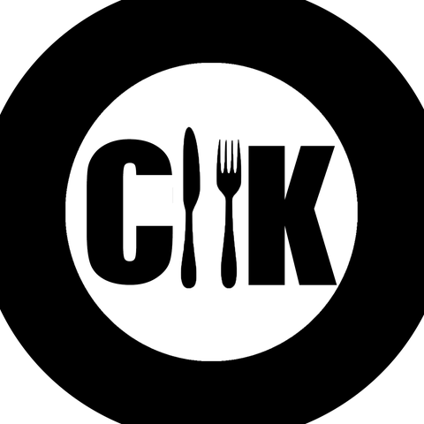

Project Name: Clarence's Kitchen Revamp
Name and affiliation of our client: Ometh is a dear friend of one of our team member's and his dad owns a Shri Lankan restaurant in Scarborough called Clarence's Kitchen. Ometh says he's already set up a website in using a website building in the past but it could use a revamp. Redesigning the website should bring more attention to their brand and provide a clean user experience to potential buyers!
- Target Users: The website obviously targets customers of the restaurant, the vast majority using mobile devices, so ensuring cross platform compatibility is a must for our project.
- Static Info: Basic static information will consist of the restaurant's address, contact info, company name, social media pages and the history in the about section.
- Design elements: Pastel cozy colours that are welcoming to the user, clear layout and high quality pictures of menu, clear call to action for catering or online orders
- Data: Information such as Price range, operating hours.
- Interactivity: Perhaps a feature that plays a little animation of the food when you hover over it, or special tags that categorize dishes based on dietary restrictions. Another thing could be visual effects when hovering over buttons like "Order Now" to incentivize the